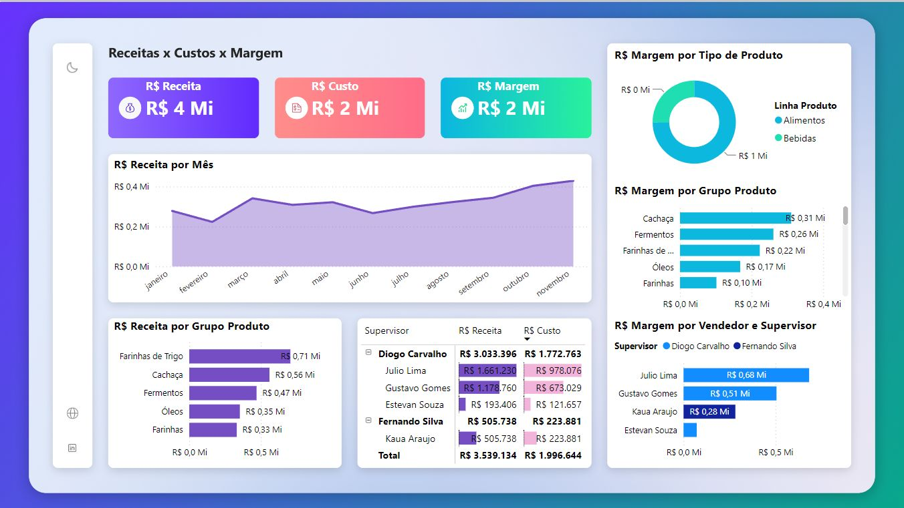
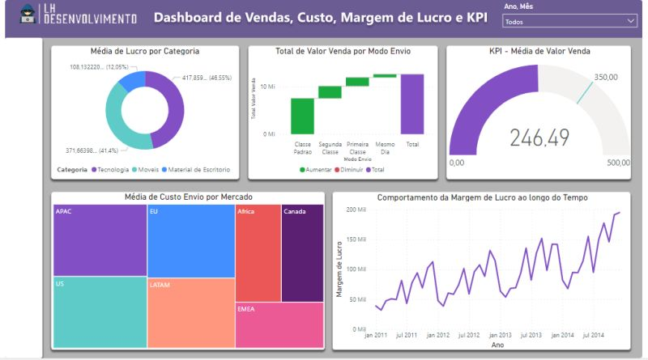

Linguagens de Programação e Banco de Dados
- Python com foco em análise de dados.
- SQL para extração de dados.
- Banco de Dados MySQL.
Nessa página, eu demonstro minhas habilidades de resolver problemas de negócio utilizando conceitos e ferramentas da Análise de Dados, através de projetos com dados públicos.
Você vai encontrar também, minhas experiências profissionais, habilidades, ferramentas e conceitos envolvendo a Análise de Dados. Sinta-se à vontade para entrar em contato através dos links no final da página.

Sou formado em Análise e Desenvolvimento de Sistemas e trabalho como Analista de Indicadores Operacionais Pleno.
Sou profissional da área de Dados e Business Intelligence, atualmente atuando como Analista de Indicadores Operacionais Pleno, com experiência na transformação de dados em informações para análise de performance, suporte à tomada de decisão e melhoria de processos.
Minha trajetória profissional combina Data Analytics, Business Intelligence e tecnologia, com experiência em extração, tratamento, modelagem e análise de dados, desenvolvimento de indicadores e construção de dashboards e relatórios gerenciais.
Atuação na análise e gestão de indicadores operacionais, utilizando dados para monitoramento de performance, identificação de desvios e oportunidades de melhoria e suporte à tomada de decisão. Responsável pela estruturação, análise e acompanhamento de KPIs e métricas operacionais, transformando dados de diferentes fontes em informações relevantes para avaliação de desempenho e gestão dos resultados. Atuação na construção e evolução de dashboards e soluções de Business Intelligence, garantindo visibilidade sobre os principais indicadores e facilitando a interpretação dos resultados pelas áreas de negócio. Também atuo na extração, tratamento e modelagem de dados, utilizando SQL e ferramentas de BI para garantir qualidade, consistência e confiabilidade das informações utilizadas nas análises.
Atuação na área de Dados e Business Intelligence, com foco na transformação, análise e visualização de dados para suporte à tomada de decisão e melhoria de processos. Responsável pela extração, tratamento, integração e análise de dados, utilizando SQL para consulta e consolidação de informações provenientes de diferentes fontes. Desenvolvimento e manutenção de modelos de dados, dashboards e relatórios gerenciais em Power BI, com acompanhamento de KPIs e indicadores de desempenho. Também atuei na automação e otimização de processos relacionados a dados, buscando aumentar a eficiência na disponibilização das informações e reduzir atividades manuais.
Atuação na análise e utilização de dados para suporte às estratégias de fidelidade, campanhas promocionais e decisões relacionadas ao negócio. Desenvolvimento de dashboards e acompanhamento de KPIs e OKRs para monitoramento de resultados e performance. Realização de análises e benchmarking de mercado, contribuindo para a identificação de oportunidades e aprimoramento das estratégias de fidelidade. Interface com stakeholders e fornecedores, apoiando a integração entre áreas, gestão de demandas e execução de iniciativas.
Selecionado entre mais de 1.200 candidatos para participação na terceira turma do programa de jovens talentos da Apprenty, com foco em análise de dados aplicada ao negócio. Desenvolvimento de conhecimentos práticos em análise e tratamento de dados utilizando Excel, criação de dashboards para visualização de informações e desenvolvimento de apresentações para comunicação de insights e suporte à tomada de decisão.
Desenvolvimento e personalização de soluções utilizando SharePoint, Power Apps e Power Automate. Participação em projetos de migração e replicação de aplicações entre diferentes ambientes Microsoft, além da personalização de formulários e desenvolvimento de soluções para processos empresariais. Desenvolvimento e customização de interfaces utilizando HTML, CSS, Bootstrap, JavaScript e jQuery, incluindo alterações de temas, componentes visuais e animações.
Atuação no desenvolvimento de sites, aplicações e automações para otimização de processos internos. Desenvolvimento de soluções integradas ao SharePoint e Power Platform, incluindo automações para publicação e aprovação de notícias, disparo de alertas por e-mail e processos de fechamento financeiro mensal. Desenvolvimento de aplicativos utilizando Power Apps integrados a fluxos do Power Automate, além da criação de interfaces web utilizando HTML, CSS, JavaScript, jQuery, Bootstrap e Ajax.

Este é um projeto no qual a empresa gostaria de pegar o histórico de vendas de janeiro até novembro de 2023, e tirar Insights valiosos de seus dados.

Este é um Dashboard que visa promover insigths relacionados a Custo de vendas, Margem de Lucro e Análise de KPI realcionado a meta
Sinta-se à vontade para entrar em contato.